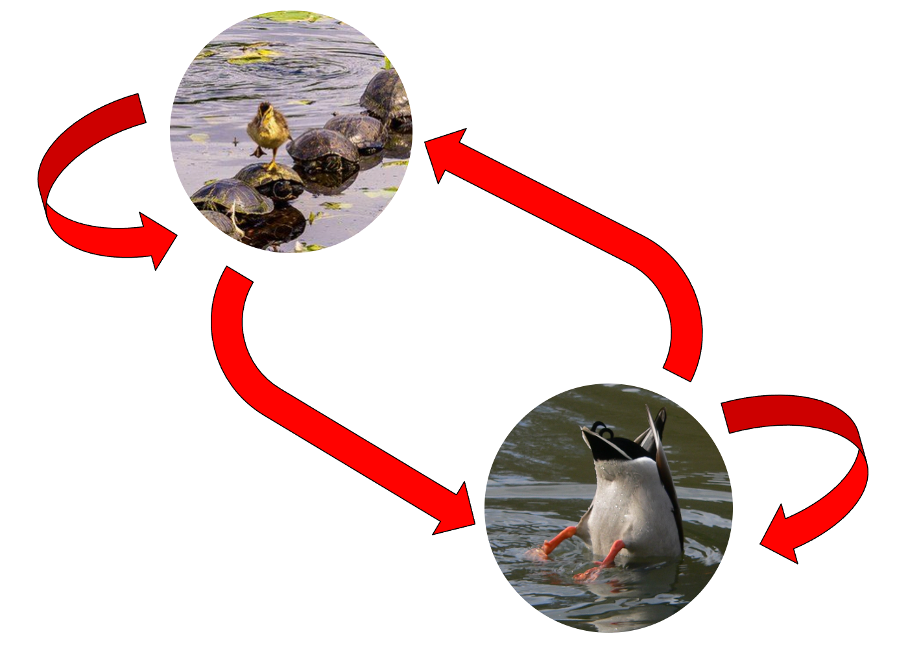
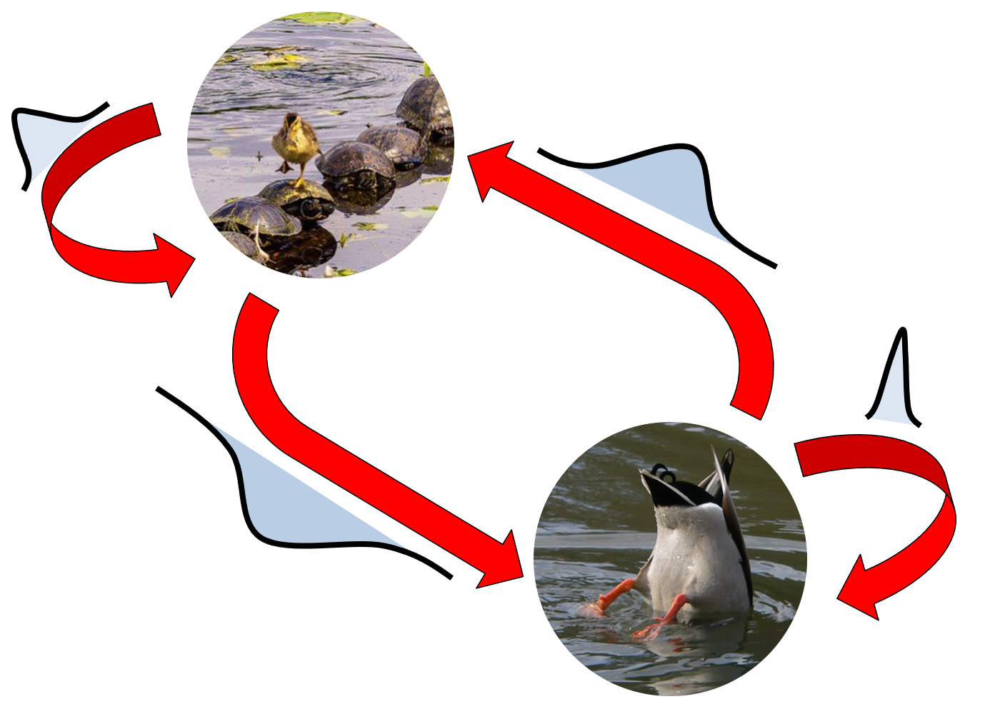
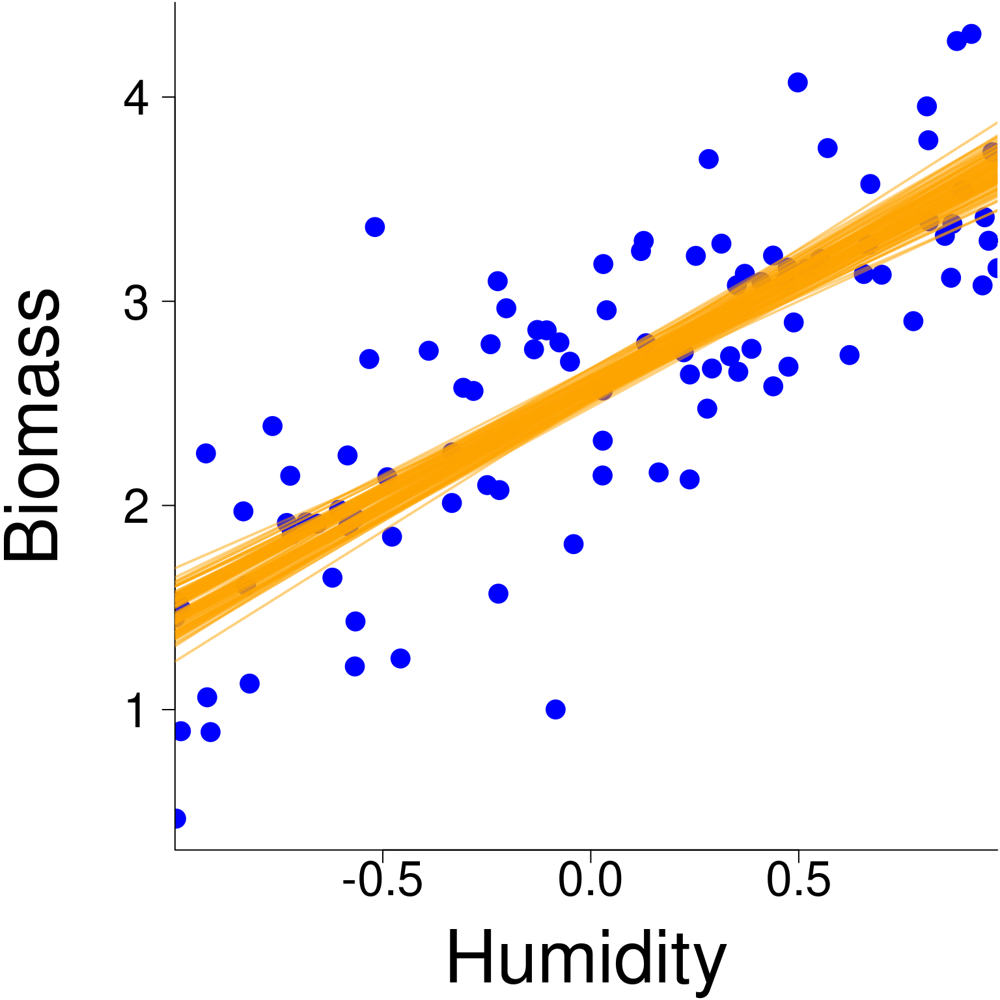

v <- c(3, 1)
x <- c(2,5)
sum(v * x)[1] 11The square matrix has as many rows at it has columns \[ \mathbf{B} = \begin{bmatrix} B_{11} & B_{12} & \dots & B_{1j} & \dots & B_{1n}\\ B_{21} & B_{22} & \dots & B_{2j} & \dots & B_{2n}\\ \vdots & \vdots & \ddots & \vdots & & \vdots\\ B_{i1} & B_{i2} & \dots & B_{ij} & \dots & B_{in}\\ \vdots & \vdots & & \vdots & \ddots & \vdots\\ B_{n1} & B_{n2} & \dots & B_{nj} & \dots & B_{nn}\\ \end{bmatrix} \]
Not sure if it should be included or not
Right eigenvector is :
\[\mathbf{A}\mathbf{w} = \lambda\mathbf{w}\] Left eigenvector is :
\[\mathbf{v}\mathbf{A} = \lambda\mathbf{v}\]
Rules
It is reasonably common when you build a hierarchical model to get an error message that state :
Error: Matrix X is not positive definite
or similarly
Error: Matrix X is not positive semi-definite
What does this mean ? Any idea ?
Positive definite matrix
\(\mathbf{M}\) is a positive definite matrix if, for any real vector \(\mathbf{z}\), \(\mathbf{z}^t\mathbf{M}\mathbf{z} > 0\)
Positive semi-definite matrix
\(\mathbf{M}\) is a positive semi-definite matrix if, for any real vector \(\mathbf{z}\), \(\mathbf{z}^t\mathbf{M}\mathbf{z} \ge 0\)
The properties of eigenvalues can be used to detect if a matrix is positive (semi-) definite.
All we have to do is look at the eigenvalue of a square matrix.
If all eigenvalues of a matrix \(\mathbf{M}\) larger than 0, matrix \(\mathbf{M}\) is positive definite.
If all eigenvalues of a matrix \(\mathbf{M}\) larger than or equal ro 0, matrix \(\mathbf{M}\) is positive semi-definite.
\[\mathbf{v} \cdot \mathbf{x}= v_1x_1+v_2x_2+\dots + v_nx_n\]
\[ \begin{bmatrix} 3 & 1\\ \end{bmatrix} \cdot \begin{bmatrix} 2\\ 5\\ \end{bmatrix} = 3 \times 2 + 1 \times 5 = 11 \]
In R
v <- c(3, 1)
x <- c(2,5)
sum(v * x)[1] 11\[ \begin{align*} 1 &= 3\beta_1 + 5\beta_2 - 4\beta_3 \\ 0 &= \beta_1 - 2\beta_2 + 3\beta_3\\ 1 &= 4\beta_1 + 6\beta_2 + 5\beta_3\\ \end{align*} \] \[ \mathbf{y} \,\,\,\,\,\,\,\,\,\,\qquad \mathbf{X} \,\,\,\,\,\,\,\,\,\,\,\qquad \boldsymbol{\beta} \] \[ \begin{bmatrix} 1\\ 0\\ 1\\ \end{bmatrix}= \begin{bmatrix} 3 & 5 & -4\\ 1 & -2 & 3\\ 4 & 6 & 5 \\ \end{bmatrix} \begin{bmatrix} \beta_1\\ \beta_2\\ \beta_3\\ \end{bmatrix} \]
\[ \mathbf{y} \,\,\,\,\,\,\,\,\,\,\qquad \mathbf{X} \,\,\,\,\,\,\,\,\,\,\,\qquad \boldsymbol{\beta} \] \[ \begin{bmatrix} 1\\ 0\\ 1\\ \end{bmatrix}= \begin{bmatrix} 3 & 5 & -4\\ 1 & -2 & 3\\ 4 & 6 & 5 \\ \end{bmatrix} \begin{bmatrix} \beta_1\\ \beta_2\\ \beta_3\\ \end{bmatrix} \]
How do we mathematically solve for \(\boldsymbol{\beta}\)?
\[ \begin{align*} \mathbf{y} &= \mathbf{X}\boldsymbol{\beta}\\ \mathbf{X}^{-1}\mathbf{y} &= \mathbf{X}^{-1}\mathbf{X}\boldsymbol{\beta}\\ \mathbf{X}^{-1}\mathbf{y} &= \mathbf{I}\boldsymbol{\beta}\\ \mathbf{X}^{-1}\mathbf{y} &= \boldsymbol{\beta}\\ \end{align*} \]
\[ \mathbf{y} \,\,\,\,\,\,\,\,\,\,\qquad \mathbf{X} \,\,\,\,\,\,\,\,\,\,\,\qquad \boldsymbol{\beta} \] \[ \begin{bmatrix} 1\\ 0\\ 1\\ \end{bmatrix}= \begin{bmatrix} 3 & 5 & -4\\ 1 & -2 & 3\\ 4 & 6 & 5 \\ \end{bmatrix} \begin{bmatrix} \beta_1\\ \beta_2\\ \beta_3\\ \end{bmatrix} \]
How do we solve for \(\boldsymbol{\beta}\) in R?
X <- matrix(c(3, 1, 4, 5, -2, 6, -4, 3, 5), nrow = 3, ncol = 3)
y <- c(1, 0, 1)
(beta <- solve(X, y))[1] 0.20000000 0.05714286 -0.02857143These types of priors are convenient to use because
There is no need to write the likelihood down when using them. All that needs to be done is to sample them to obtain a parameter estimation.
It means that both distribution have th same mathematical structure.
Binomial distribution \[\theta^a(1-\theta)^b\]
Beta distribution \[\theta^{\alpha-1}(1-\theta)^{\beta-1}\]
Technically, we can sample all \(\boldsymbol{\beta}_{f[l]}\) independently, however, using multivariate Gaussian distribution, we can sample the \(\boldsymbol{\beta}_{f}\) for all levels of the factor in one go as
\[\boldsymbol{\beta}_{f} \sim \mathcal{MVN}(\boldsymbol{\mu}_{f}, \mathbf{D}_f)\] where
The structure of matrix \(\mathbf{D}_f\) can be considered in two different ways in
\[\boldsymbol{\beta}_{f} \sim \mathcal{MVN}(\boldsymbol{\mu}_{f}, \mathbf{D}_f)\]
Written in the general form as we did in the equation above, we assume that all variance on the diagonal are potentially different. Or in other words, the variance in each group is assumed to be different
\[\mathbf{D}_f = \begin{bmatrix} \sigma^2_{f[1]} & 0 & \dots & 0 & \dots & 0\\ 0 & \sigma^2_{f[2]} & \dots & 0 & \dots & 0\\ \vdots & \vdots & \ddots & \vdots & & \vdots\\ 0 & 0 & \dots & \sigma^2_{f[l]} & \dots & 0\\ \vdots & \vdots & & \vdots & \ddots & \vdots\\ 0 & 0 & \dots & 0 & \dots & \sigma^2_{f[k]}\\ \end{bmatrix}\]
However, it can be assumed to be all the same variance regardless of the group considered
\[\mathbf{D}_f = \begin{bmatrix} \sigma^2_{f} & 0 & \dots & 0 & \dots & 0\\ 0 & \sigma^2_{f} & \dots & 0 & \dots & 0\\ \vdots & \vdots & \ddots & \vdots & & \vdots\\ 0 & 0 & \dots & \sigma^2_{f} & \dots & 0\\ \vdots & \vdots & & \vdots & \ddots & \vdots\\ 0 & 0 & \dots & 0 & \dots & \sigma^2_{f}\\ \end{bmatrix}\]
In this case, \(\boldsymbol{\beta}_{f} \sim \mathcal{MVN}(\boldsymbol{\mu}_{f}, \mathbf{D}_f)\) can be rewritten as \[\boldsymbol{\beta}_{f} \sim \mathcal{MVN}(\boldsymbol{\mu}_{f}, \sigma^2_{f}\mathbf{I})\] Note: This is essentially the same thing as a one-way analysis of variance.
As discuss yesterday, a linear model can be writen as
\[(\mathbf{y}|\mathbf{X}, \boldsymbol{\beta}, \sigma_\mathbf{y}^2)\sim \mathcal{MVN}(\mathbf{X} \boldsymbol{\beta}, \sigma\mathbf{y}^2\mathbf{I})\]
where
A hierarchical model is a generalization of the linear model such that
\[(\mathbf{y}|\mathbf{X},\mathbf{Z}, \boldsymbol{\beta}, \mathbf{b}, \sigma_\mathbf{y}^2)\sim \mathcal{MVN}(\mathbf{X} \boldsymbol{\beta} + \mathbf{Z}\mathbf{b}, \sigma_\mathbf{y}^2\mathbf{I})\]
where
A hierarchical model is a generalization of the linear model such that
\[(\mathbf{y}|\mathbf{b} )\sim \mathcal{MVN}(\mathbf{X} \boldsymbol{\beta} + \mathbf{Z}\mathbf{b}, \sigma^2\mathbf{I})\] What is also noticeable in this model is the conditional relationship between \(\mathbf{y}\) and \(\mathbf{b}\).
Specifically, in this formulation,
\[\mathbf{b}\sim \mathcal{MVN}(\mathbf{0}, \mathbf{\Sigma})\] where \(\mathbf{\Sigma}\) is a covariance matrix.
Based on this general formulation, we can now define all unconstrained hierarchical models.
For simplicity, let’s assume that we are monitoring the behaviour of the mallard every minutes and that we are recording whether it is


Using this information, we can draw diagram defining how the behaviour of the mallard changes at every time steps
. . .

In a markov chain, we assume that we know how probable it is to go from one behaviour (land) to another (water)
. . .

In an MCMC, we assume that the likeliness of passing from one behaviour (land) to another (water) depends on a statistical distribution.
. . .

\[\mathbf{C} = \mathbf{A}\pm \mathbf{B}\] \[C_{ij} = A_{ij} \pm B_{ij}\]
\[\begin{bmatrix} 3 & 5\\ 1 & -2\\ \end{bmatrix} + \begin{bmatrix} 2 & 1\\ 4 & -2\\ \end{bmatrix} = \begin{bmatrix} 3+2 & 5+1\\ 1+4 & -2-2\\ \end{bmatrix} = \begin{bmatrix} 5 & 6\\ 5 & -4\\ \end{bmatrix}\]
In R
A <- matrix(c(3, 1, 5, -2), nrow = 2, ncol = 2)
B <- matrix(c(2, 4, 1, -2), nrow = 2, ncol = 2)
A + B [,1] [,2]
[1,] 5 6
[2,] 5 -4\[\begin{bmatrix} -10 & 0 & 0 & 0\\ 3 & 0 & 0 & 0\\ 0 & 4 & 3 & 0\\ 9 & -5 & 4 & 3\\ \end{bmatrix}\]
\[\begin{bmatrix} -10 & 0 & -5 & 0\\ 0 & 0 & 5 & 6\\ 0 & 0 & 3 & 3\\ 0 & 0 & 0 & 3\\ \end{bmatrix}\]
The values on the above and below the diagonal are match so that \(A = A^t\)
\[ \begin{bmatrix} 3 & 4 & -10\\ 4 & 5 & 7\\ -10 & 7 & -6\\ \end{bmatrix} \]
In matrix algebra, we cannot divide a matrix by another matrix, but we can multiple it by its inverse, which gets us to the same place. Classically, the inverse of matrix \(\mathbf{A}\) is defined as \(\mathbf{A}^{-1}\)
As such, \[\mathbf{A}\cdot \mathbf{A}^{-1} = \mathbf{I}\]
. . .
In R
A <- matrix(c(3, 1, 5, -2), nrow = 2, ncol = 2)
(Ainv <- solve(A)) [,1] [,2]
[1,] 0.18181818 0.4545455
[2,] 0.09090909 -0.2727273A %*% Ainv [,1] [,2]
[1,] 1.000000e+00 0
[2,] -2.775558e-17 1\[D^{-1}= \begin{bmatrix} 1/d_1 & 0 & \dots & 0\\ 0 & 1/d_2 & \dots & 0\\ \vdots & \vdots & \ddots & \vdots\\ 0 & 0 & \dots & 1/d_n\\ \end{bmatrix}\]
. . .
Many techniques have been proposed to estimate the parameters of a regression model.
. . .
The goal of this course is not to study these techniques but we will learn how to play with the estimated parameters because it will be very useful as we move along.
. . .
The most common way to build a regression model is
reg <- lm(b.exemplaris ~ humidity). . .
Say we now want to build a model’s confidence interval from a linear regression
. . .
How would you do it ?
. . .
Let’s look at the model’s results, maybe it will help us
(summaryReg <- summary(reg))
Call:
lm(formula = b.exemplaris ~ humidity)
Residuals:
Min 1Q Median 3Q Max
-1.47988 -0.26475 0.00611 0.32590 1.36077
Coefficients:
Estimate Std. Error t value Pr(>|t|)
(Intercept) 2.57389 0.04720 54.53 <2e-16 ***
humidity 1.10086 0.07976 13.80 <2e-16 ***
---
Signif. codes: 0 '***' 0.001 '**' 0.01 '*' 0.05 '.' 0.1 ' ' 1
Residual standard error: 0.4718 on 98 degrees of freedom
Multiple R-squared: 0.6603, Adjusted R-squared: 0.6569
F-statistic: 190.5 on 1 and 98 DF, p-value: < 2.2e-16. . .
Let’s say we want to construst the model’s confidence intervals by sampling multiple times (say 100 times!) the regression parameters, which we will assume follow Gaussian distribution. How would you do this?
We could sample the model parameters but how can we do this properly?
. . .
Any suggestions?

If we look at the estimated regression model coefficient, we can learn a few things
. . .
summaryReg$coefficients Estimate Std. Error t value Pr(>|t|)
(Intercept) 2.573889 0.04720304 54.52804 4.011925e-75
humidity 1.100865 0.07975800 13.80256 1.035796e-24. . .
Notably, there are uncertainty around the parameters.
. . .
Maybe we can use this information to sample model parameters and reconstruct models across different iterations of parameters.
. . .
Let’s give it a shot !
If we assume that the parameters of our particular model follow a Gaussian distribution, we can state that
. . .
\[\beta_0 \sim \mathcal{N}(2.574, 0.047^2)\] \[\beta_1 \sim \mathcal{N}(1.101, 0.080^2)\]
In R, we can do this as follow
# Object that include regression coefficients
regCoef <- summaryReg$coefficients
# Sample regression parameters
beta_0 <- rnorm(100, mean = regCoef[1,1], sd = regCoef[1,2])
beta_1 <- rnorm(100, mean = regCoef[2,1], sd = regCoef[2,2])
But is this the right way to do it ?

Actually, even if the model’s confidence interval look about right, they are wrong !

The approach presented in the previous slide works only if we assume that the parameters are completely independent from one another.
. . .
A situation that happens only in very specific circumstances.
. . .
So… We need to find a way to account for the non-independencies between the parameters.
. . .
How can we do this ? Any ideas ?
Assuming the regression parameters are normally distributed is not a bad assumption.
. . .
However to consider a dependencies between the parameters we need to sample them from a multivariate normal distribution where the variance of each parameter and their dependency is defined by a covariance matrix estimated specifically for the data we model.
. . .
The good news is that this covariance matrix is given by summary.lm function
. . .
(covReg <- summaryReg$cov.unscaled) (Intercept) humidity
(Intercept) 0.0100098513 -0.0005305969
humidity -0.0005305969 0.0285782940For our specific model, mathematically, we assume that
. . .
\[\begin{bmatrix} \beta_0\\ \beta_1\\ \end{bmatrix} \sim \mathcal{MVN} \left( \begin{bmatrix} 2.574\\ 1.101\\ \end{bmatrix}, \begin{bmatrix} 0.0100 & -0.0005 \\ -0.0005 & 0.0286 \\ \end{bmatrix} \right)\]
. . .
Note To present the multivariate normal distribution, we rely on matrix notation. This is our first introduction into matrix algebra. We will talk about this more into this course.
In R, we can sample the parameters using a multivariate normal distribution using the following code
# Object that include regression coefficients
regCoef <- summaryReg$coefficients
# Sample regression parameters
beta <- MASS::mvrnorm(100, regCoef[,1], Sigma = covReg)